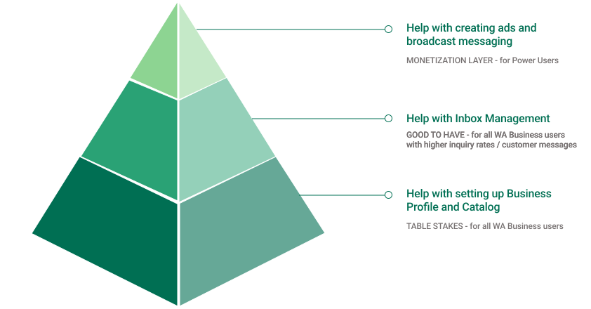
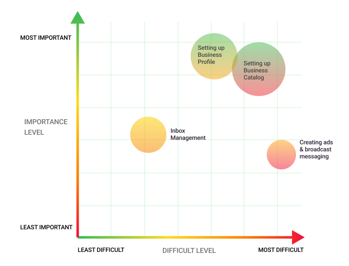

This Meta project is password-protected. Enter the password to view it.
← Back to portfolioA two-market generative study that decided what AI should be for small businesses — establishing the strategic framework for modality, branding, and monetization architecture across a product serving millions.
WhatsApp Business was at an inflection point: multiple AI capabilities were being built in parallel (a business-focused agent, a general assistant, several interface modalities), but there was no unified vision for how they should come together for small-business users.
From the outset the goal wasn't to ship a feature — it was to set a North Star: an evidence-based answer to what AI should be for SMBs on WhatsApp, plus the framework to get the team there. Concretely, I set out to answer four questions:
To test the modality decisions with SMBs, I prototyped each modality across three core tasks — built in Stitch, with the microanimations running live (the pulsing field highlight, the floating tip card). Pick a task, then compare how each modality handles it.
All of these prototypes were vibe-coded using Stitch.
I synthesized the interviews into a prioritization hierarchy for the four core jobs — creating a business profile, setting up the catalog, inbox management, and creating ads & broadcast messaging — scoring each by importance and difficulty and segmenting by SMB type. It's not just a map of what matters; it's an actionable build order: the high-importance, high-difficulty jobs are where AI should land first — and the priority shifts depending on who the business owner is.

Underneath that hierarchy is the raw distribution — how individual SMBs rated each job. The four jobs are plotted by importance and difficulty, and the size of each bubble denotes the number of SMBs who voted for that job — so the highest-leverage targets are the large bubbles sitting high on both axes.

Beyond findings, this study made concrete decisions about how people would interact with the AI:
The research pointed to a clear rule: modality should follow task complexity — with a smart default and the option to switch. Guided UI carries routine, structured setup; a chat assistant handles ongoing, conversational work; and a voice/avatar agent earns its place in the complex, novel "teaching moments." This framework maps the four core jobs to the modality that wins each.
Not a single-modality bet — AI form should follow task complexity, with sensible defaults and the ability to switch.
Distinct naming anchored on outcomes ("talk to customers, get info, sell faster") resolves the agent-vs-assistant confusion and increases adoption.
Default to pre-trained; offer custom options for power users — best UX and the clearest monetization path.
Keep humans in the loop for high-stakes moments; AI assists but doesn't close — this preserves trust.
What worked: the two-tier recommendation structure made findings actionable across time horizons; cross-market convergence strengthened the recommendations; and framing every finding through business impact kept PM and leadership engaged.
What I'd do differently: add a quantitative validation phase to strengthen the "one assistant" recommendation; also test with experienced users (all participants were new to the agent), and coordinate earlier with adjacent research.
What I learned: how to design research that shapes long-term vision (not just evaluate features), the power of comparative concept testing, and how to translate qualitative insight into strategic frameworks leadership can act on.
This was generative design research and product strategy — the upstream design work that decides what a product should become before any screen is finalized. As design researcher and strategist, I designed the concept stimuli for three AI modalities, mapped jobs-to-be-done across the SMB workflow, ran a comparative evaluation, and synthesized the findings into a North Star framework and a set of design principles that now guide modality, branding, and monetization decisions for WhatsApp Business AI.